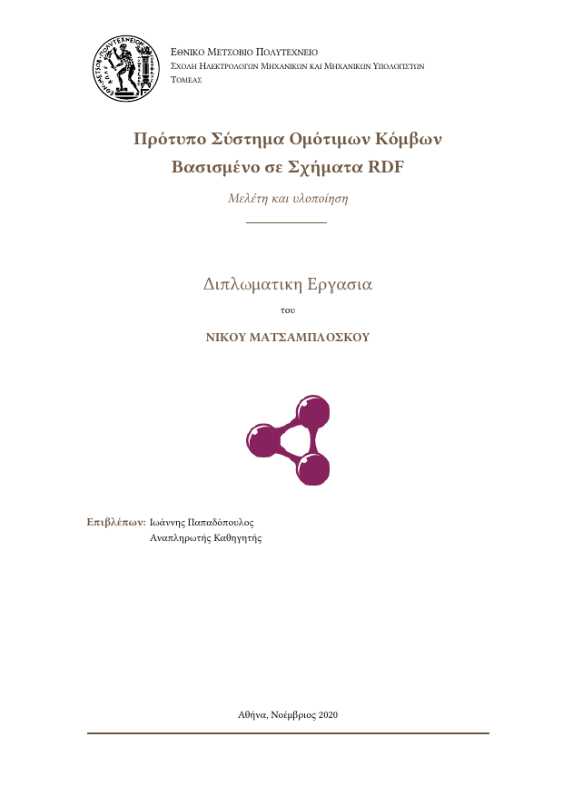

Πρότυπο Διπλωματικής
ΣΗΜΜΥ ΕΜΠ
LaTeX πρότυπο για τη διπλωματική σου, έτοιμο για Overleaf.
Γράφεις ελληνικά και αγγλικά στην ίδια πρόταση, χωρίς \en{…},
και κάνει compile με XeLaTeX, LuaLaTeX ή pdfLaTeX.
Δημιουργεί νέο project στο Overleaf με το πρότυπο και XeLaTeX ήδη επιλεγμένο.

Η ίδια πρόταση, όπως την πληκτρολογείς, χωρίς καμία εντολή:
Ξεκίνημα
Στο Overleaf
- Κατέβασε το ZIP, ή πάτα «Άνοιγμα στο Overleaf» και πήγαινε στο βήμα 3.
- Overleaf: New Project → Upload Project και διάλεξε το ZIP.
- Menu → Compiler: XeLaTeX και TeX Live version: η πιο πρόσφατη.
- Συμπλήρωσε τα στοιχεία σου στο
main.texκαι πάτα Recompile.
Το δωρεάν Overleaf σταματά κάθε compile στα 10 δευτερόλεπτα.
Όσο γράφεις, κράτα τις επιλογές plain,noindex που έχει ήδη το
main.tex. Αν το πρώτο compile λήξει, πάτα ξανά Recompile.
Στον υπολογιστή σου
Με TeX Live 2023 ή νεότερο, ή MiKTeX:
latexmk -xelatex main.tex # προτείνεται
latexmk -pdf main.tex # pdfLaTeX
latexmk -lualatex main.tex # LuaLaTeXΣτο VS Code, η επέκταση LaTeX Workshop κάνει compile σε κάθε αποθήκευση και δείχνει το PDF δίπλα στον κώδικα.
Άλλη γραμματοσειρά
Μετά το \documentclass, π.χ. CMU Serif:
\setmainfont{cmun}[Extension=.otf,
UprightFont=*rm, BoldFont=*bx,
ItalicFont=*ti, BoldItalicFont=*bi]Τι διορθώθηκε
| Στο αρχικό πρότυπο | Τώρα |
|---|---|
Χωρίς την επιλογή plain: δεκάδες σφάλματα TikZ («Did you forget a semicolon?») | Compile χωρίς σφάλματα με όλες τις επιλογές |
| Με XeLaTeX/LuaLaTeX δεν έκανε compile | Δουλεύει, με γραμματοσειρές OpenType της επιλογής σου |
Τα αγγλικά χωρίς \en{…} έβγαιναν με ελληνικά γράμματα | Με XeLaTeX γράφονται κανονικά· το \en{…} μένει προαιρετικό |
Κώδικας: def τυπωνόταν «δεφ», τα ελληνικά σχόλια χάνονταν | Σωστός κώδικας και ελληνικά σχόλια σε όλες τις μηχανές |
\url{https://…} τυπωνόταν «ηττπς://…» | Τα URL γράφονται πάντα με λατινικά |
Το ; γινόταν άνω τελεία «·» | Ελληνικό ερωτηματικό· η άνω τελεία γράφεται · |
| Βιβλιογραφία με «Diplwmatik'h ergas'ia», «kai», «Sto» | Σωστά ελληνικά σε όλες τις μηχανές |
Έλεγχοι
Αυτόματα σενάρια με pdfLaTeX, XeLaTeX και LuaLaTeX: όλες οι επιλογές, μικτό κείμενο, κώδικας, TikZ, βιβλιογραφία, δύο φοιτητές, αλλαγή compiler. Η αναφορά έχει τα αποτελέσματα και στιγμιότυπα πριν και μετά.